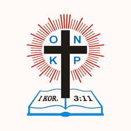
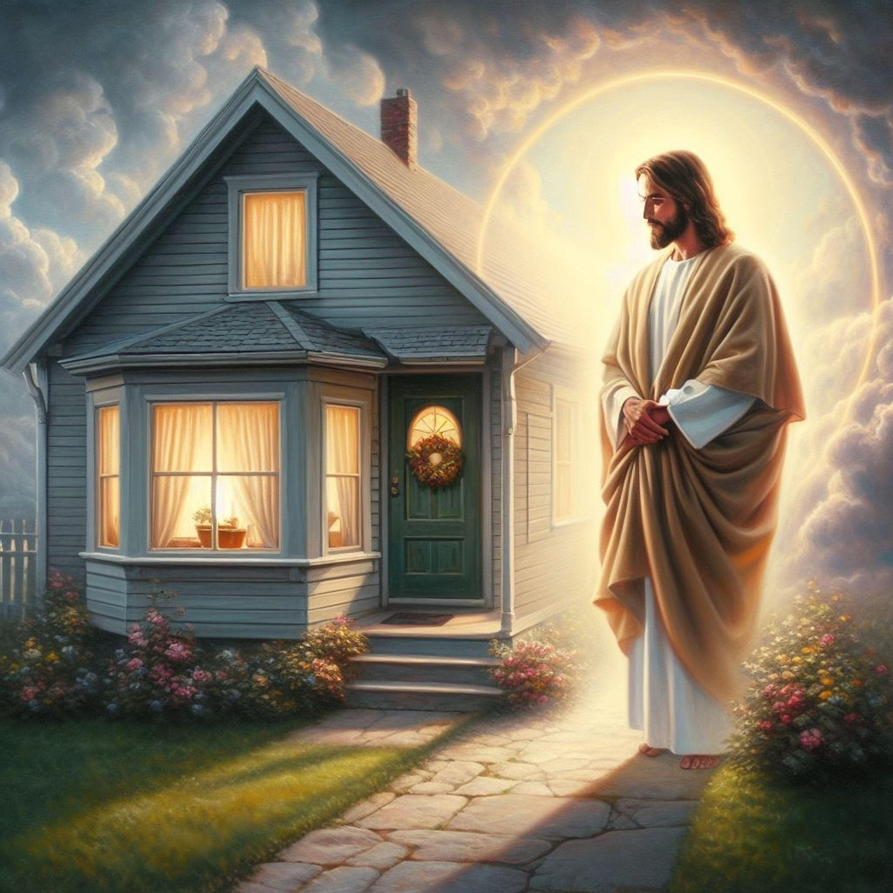
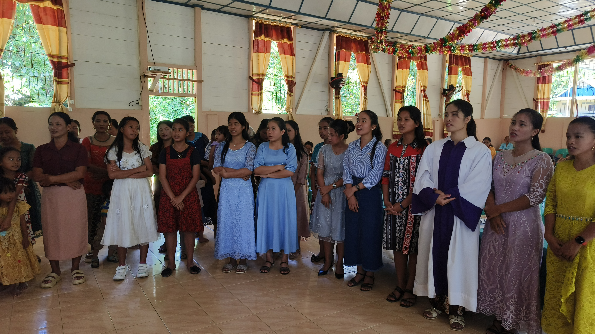
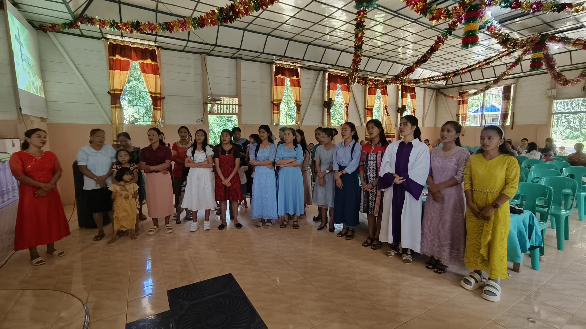
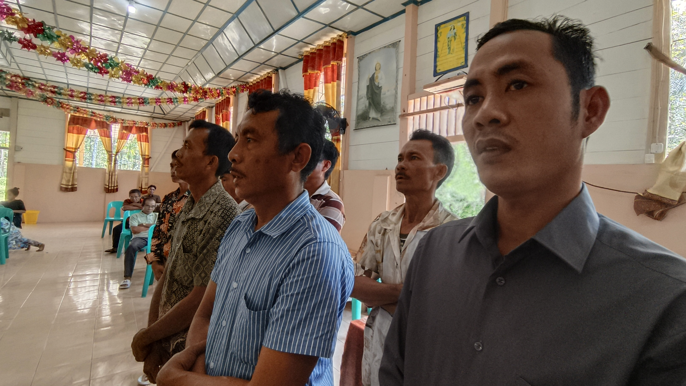
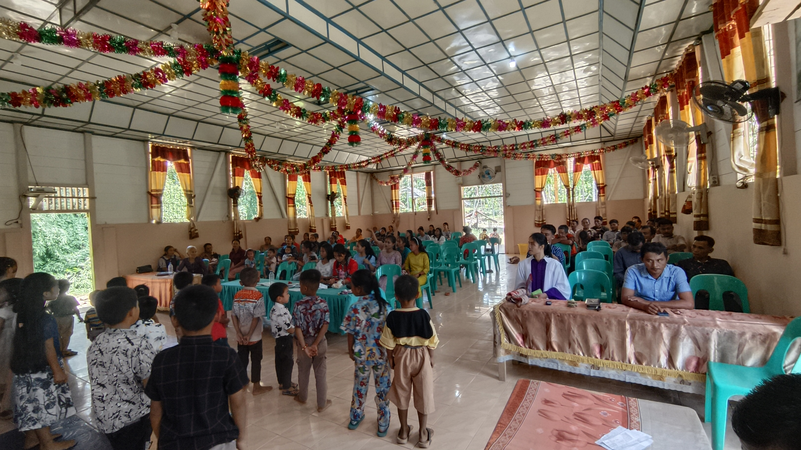
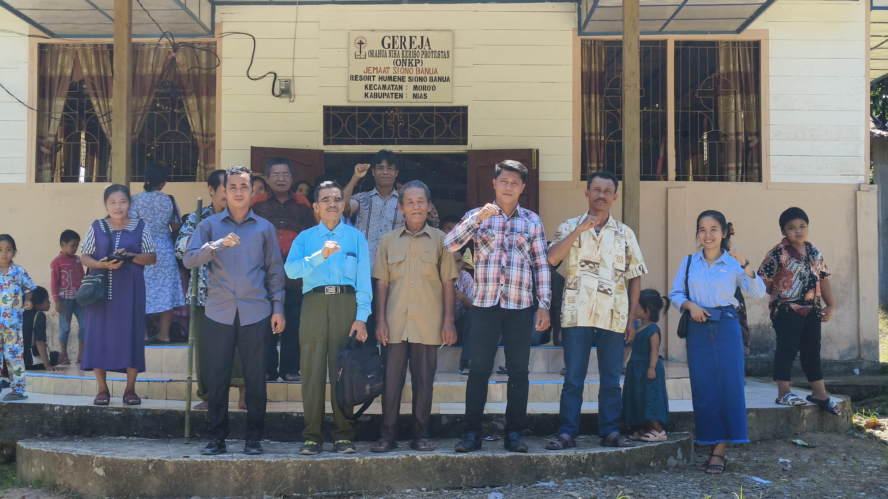

Program ini bertujuan untuk meningkatkan kualitas ibadah dan pelayanan dengan menyediakan perangkat multimedia di Gereja ONKP SIONOBANUA, Desa Sitolubanua Fadoro, Kecamatan Moro’o, Kabupaten Nias Barat.
“Kita percaya, pelayanan yang baik dimulai dari hati yang mau memberi. Yuk, ambil bagian dalam donasi pengadaan alat multimedia gereja kita! Bersama, kita ciptakan suasana ibadah yang lebih nyaman, penuh semangat, dan menjangkau lebih banyak jiwa.”.
Alat yang Dibutuhkan Saat Ini :





| Bank | No. Rekening | Atas Nama |
|---|---|---|
| Bank Sumut | 27302040100495 | Majelis Jemaat Sionobanua |
🙏 Silakan transfer ke rekening di atas, lalu isi form donasi sebagai laporan.
Berikut adalah daftar donatur yang telah memberikan dukungan untuk pengadaan alat multimedia Gereja ONKP SIONOBANUA.
| No | Nama Donatur | Jumlah Donasi | Alamat | Keterangan | Catatan |
|---|---|---|---|---|---|
| 1 | Martanelis Gulo | Rp 200.000 | Onolimbu You, Nias Barat | Lunas | Terima kasih Tuhan Yesus Memberkati |
| 2 | Julifati Gulo | Rp 200.000 | Sionobanua, Nias Barat | Lunas | Terima kasih Tuhan Yesus Memberkati |
| 3 | Jelita Hasrat astuti Gulo | Rp 50.000 | Medan | Lunas | Donasi Gereja |
| 4 | Defri Putri Gulo | Rp 50.000 | Tarutung | Lunas | Semoga Bermanfaat |
| 5 | Trihartati Gulo | Rp 50.000 | Nias Selatan | Lunas | Tuhan Yesus Memberkati |
| 6 | NN | Rp 10.000 | Simaeasi | Lunas | God Bless |
| 7 | Nini Nasrani Zai | Rp 50.000 | Semarang | Lunas | Terima kasih |
| 8 | Lestari Loi | Rp 20.000 | Nias Selatan | Lunas | Terima Kasih |
| 9 | Eliaki Gulo | Rp 20.000 | Dangagari, Sitolubanua Fadoro, Moroo, Nias Barat | Lunas | Terima kasih |
| 10 | A. Jeon Gulo | Rp 50.000 | Onolimbu You, Nias Barat | Lunas | Terima kasih |
| 11 | Oktoberiana Daely | Rp 100.000 | Hiliadulo, Nias Barat | Lunas | Terima kasih |
| 12 | Reziati Gulo | Rp 100.000 | Tangerang Kota | Lunas | GBU🙏😇 |
| 13 | Mathius Gulo | Rp 50.000 | Lakhene, Nias Barat | Lunas | Tetap semangat melayani Tuhan |
| 14 | Emilia Gulo | Rp 100.000 | Hilisoromi, Nias Barat | Lunas | God Bless |
| 15 | Dominika Gulo | Rp 100.000 | Dangagari, Nias Barat | Lunas | Terima Kasih Tuhan Yesus Memberkati |
| 16 | Laurensia Waruwu | Rp 40.000 | Pekanbaru | Lunas | Terima Kasih Tuhan Yesus Memberkati |
| 17 | Primus Waruwu | Rp 200.000 | Sisobandrao | Lunas | Partisipasi Pembangunan Gereja |
| 18 | Cipta Imani S. Waruwu | Rp 100.000 | Jakarta | Lunas | Tuhan Yesus Memberkati |
| 19 | Kristine Gulo | Rp 20.000 | Lolohia | Lunas | Tuhan Yesus Memberkati |
| 20 | Emi Waruwu | Rp 300.000 | Fadoro Mandrehe | Lunas | Tuhan Yesus Memberkati |
| 21 | Onekhesi Gulo | Rp 400.000 | Tangerang | Lunas | Tuhan Yesus Memberkati |
| 22 | Sedekia Waruwu | Rp 200.000 | Purwakarta jawa Barat | Lunas | Tuhan Yesus Memberkati |
| 23 | Soza Warasi | Rp 25.000 | Onolimbu | Lunas | TYM |
📍 Desa Sitolubanua Fadoro, Kec. Moro’o, Kab. Nias Barat
📞 0813-7600-0100 & 0852-1049-4525 Panitia | ✉️ gerejaonkpsionobanua@gmail.com